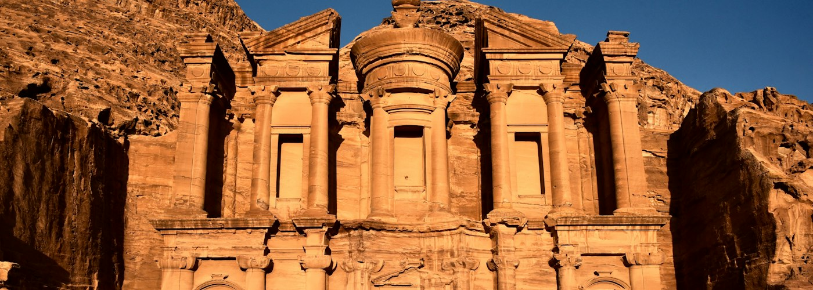
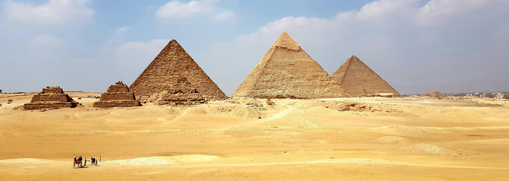

Petra | Jordan
Built around 312BC, Petra was rediscovered by a Swiss explorer - Johann Ludwig Burckhardt in
1812.
Reckoned as Lost City, Petra was almost extinct as it remained buried beneath the layers of
sand for
centuries. After a long excavation work conducted on the site, Petra came to the surface and
became
one of the seven wonders of the world for a valid reason. It is one of the oldest cities in
the
world that is a classic example of the most extraordinary prehistoric civilizations. Also
known as
the Rose City, this sprawling UNESCO World Heritage is home to about 800 tombs with pink
facades.
Petra is an ancient city that was carved out of rock in southwest Jordan. The biblical name
of Petra
is Sela, which was probably replaced by the Greek name Petra, meaning rock. Petra used to be
an
Oasis in the desert supporting the ancient city’s large population as the inhabitants were
experts
at surviving in the desert making it one of the most famous landmarks in the world. The
Romans were
eager to expand the boundaries of their empire and took over Petra in A.D. 106 the city
lived
without much change but the empire left an unforgettable mark on the ancient city.
...
Pyramids of Giza | Egypt
The Great Pyramid of Giza is the largest Egyptian
pyramid and served as the tomb of pharaoh Khufu, who ruled during the Fourth Dynasty of the
Old
Kingdom. Built in the early 26th century BC, over a period of about 27 years, the pyramid is
the
oldest of the Seven Wonders of the Ancient World, and the only wonder that has remained
largely
intact. It is the most famous monument of the Giza pyramid complex, which is part of the
UNESCO
World Heritage Site "Memphis and its Necropolis". It is situated at the northern end of the
line
of the three pyramids at Giza.
Pyramids of Giza hold immense universal value as they are the largest and most prominent
pyramid
structures in the world. These mammoth sized pyramids are symbols of the great Egyptian
civilization that flourished during the old kingdom in 2686 to 2181 BCE. The Egyptians
believed
in the afterlife and erected these elaborate pyramids to honour the Pharaohs. The Pyramid of
Khufu is open for tourists and gives you an opportunity to discover other mummies of popular
Pharaohs such as Djoser, Khafre, and Menkaure. This is one of the famous historical
monuments in
the world that will leave you awestruck with diverse cultural beliefs and legacy of eras
gone
by.
...
The Great Wall of China | China

Built during the reign of the first Chinese emperor - Qin Shi Huang, the Great Wall of China
is
recognized as one of the famous UNESCO World Heritage sites. This massive fortification was
raised to protect the territory from foreign invasions. It is claimed that the Great Wall of
China is the only man made structure that is visible from space, however, there are
contradictions to the belief. Even if this 13,000 mile fortification is not visible from
space,
it is totally worth visiting at least once in a lifetime.
Winding its way across China’s northern expanses, the Great Wall is not merely a colossal
fortification—it’s a symbol of a nation’s legacy and resilience. With origins tracing back
to
the 7th century BC, this monumental barrier, spanning over 13,000 miles, is the culmination
of
the endeavors of multiple Chinese dynasties. While its primary role was military defense,
the
Wall transcends this utilitarian purpose.
...
Taj Mahal, Agra | India

One of the most visited monuments in the world, Taj Mahal is the pride of India. This iconic
marble
mausoleum grabs the attention of many foreign tourists for its enchanting beauty and
marvelous
architecture. It is reckoned as the ‘Jewel of Islamic Art’ due to its elaborate aesthetics,
intricate carvings and striking beauty. This historical monument in Agra, India was
commissioned by
emperor Shah Jahan in memory of his favourite wife. Top artisans including painters,
carvers,
calligraphers, inlayers etc. from India, Persia and other regions were hired to create this
universally acclaimed masterpiece. And therefore it must be on everyone’s wish list.
The Taj Mahal is a mausoleum that was built by Mughal emperor Shah Jahan in memory of his
wife
Mumtaz Mahal. Built with white marble, the Taj Mahal is known for it's intricate carvings
and
iconography. Its exquisite design, influenced by Persian, Indian, and Islamic styles,
represents the
pinnacle of Indo-Islamic architecture.
...